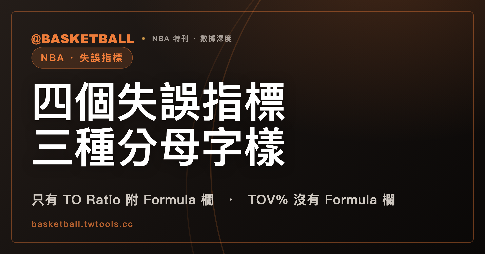

TOV%、TO Ratio、TO Freq、OPP TOV% 的定義句用了三種分母字樣：NBA 官方詞彙表 2026 年 9 月 25 日快照裡，只有 TO Ratio 附 Formula 欄
NBA 官方統計詞彙表（2026 年 9 月 25 日快照）裡，TOV%、TO Ratio、TO Freq、OPP TOV% 四個條目都與失誤有關。它們的定義句分母字樣有三種：plays、possessions used、their own possessions；四個條目裡，只有 TO Ratio 附 Formula 欄，公式是 (TO * 100) / (POSS)。

新手村｜數據入門・失誤指標 TOV%、TO Ratio、TO Freq、OPP TOV%
本文依據的是 NBA 官方統計詞彙表（NBA Stats Glossary，nba.com/stats/help/glossary）2026 年 9 月 25 日取得的快照。這是單一網頁，頁面沒有標示賽季，內容之後可能被 NBA 改寫，以官方發布的當期版本為準。文中所有「詞彙表寫了什麼」的句子，指的都是這份快照。
站內的AST%、Assist Ratio、AST/TO 對照文，已經用同樣的做法讀過三個助攻條目，其中「Assist Ratio 的定義句寫 possessions used，公式分母卻寫 POSS」一節，還順帶提到了 TO Ratio。這篇把範圍換成失誤：TOV%、TO Ratio、TO Freq、OPP TOV% 四個條目，逐條讀它們的定義句、Formula 欄與 Type 欄。讀完之後，你可以自己打開詞彙表頁面，判斷一個失誤相關的條目寫的分母是什麼、有沒有附公式。
先交代幾個用詞。「失誤率」是中文的慣稱，詞彙表沒有這個條目名；四個條目的名稱是 Turnover Percentage、Turnover Ratio、Turnover Frequency、Opponent Turnover Percentage，站上沒有既定的中文譯名，本文寫英文原名。plays 與 possessions used 在詞彙表都沒有獨立的條目，本文照原文寫英文。
四個條目的定義句寫了三種分母字樣
四個條目並排如下。定義句引用詞彙表快照的英文，Formula 欄與 Type 欄照條目所寫。
| 條目 | 定義句（Definition 欄） | Formula 欄 | Type 欄 |
|---|---|---|---|
| TO Ratio（Turnover Ratio） | The number of turnovers a player or team averages per 100 possessions used | (TO * 100) / (POSS) | Advanced |
| TOV%（Turnover Percentage） | Percentage of plays that end in a player or team's turnover | 快照的條目沒有 Formula 欄 | Advanced |
| TO Freq（Turnover Frequency） | The percentage of plays where a player or team commits a turnover | 快照的條目沒有 Formula 欄 | Play Type |
| OPP TOV%（Opponent Turnover Percentage） | The number of turnovers an opponent averages per 100 of their own possessions | 快照的條目沒有 Formula 欄 | Four Factors |
Contexts 欄也不相同。TO Ratio 列 Player 與 Clutch；TOV% 列 Player、Four Factors、Clutch；TO Freq 列 Play Type 與 Player；OPP TOV% 列 Four Factors 與 Team，沒有列 Player。
這張表有兩處值得停下來看。第一處是分母字樣：TOV% 與 TO Freq 寫的是 plays，TO Ratio 寫的是 possessions used，OPP TOV% 寫的是 their own possessions（對手自己的 possessions）。三種字樣，各自出現在不同的條目。第二處是 Formula 欄：四個條目裡，附 Formula 欄的是 TO Ratio；另外三個條目，在 Definition 與 Type 之間沒有這一欄。
另外要留意，詞彙表的措辭有兩種單位。TO Ratio 與 OPP TOV% 的定義句寫 per 100（每 100 個），TOV% 與 TO Freq 的定義句寫 percentage（百分比）。四個條目並不是全都寫 per 100。
TO Ratio 的定義句寫 possessions used，Formula 欄的分母寫 POSS
TO Ratio 的定義句是：the number of turnovers a player or team averages per 100 possessions used，也就是球員或球隊每 100 個 possessions used 平均的失誤數。Formula 欄寫的是 (TO * 100) / (POSS)。
公式的分子是 TO 乘以 100，字面上與定義句的「每 100 個」相呼應；分母是 POSS。定義句寫的是 possessions used，公式寫的是 POSS，兩個詞在快照裡沒有被連起來。這一節的細節與讀 Assist Ratio 時遇到的情形相同（見助攻條目那篇）：Assist Ratio 的定義句也寫 possessions used，Formula 欄寫的是 (AST * 100) / (POSS)。
possessions used 在這份快照裡沒有獨立詞條。在快照的全文文字檔搜尋這個詞，只找到兩處，分別是 AST Ratio 與 TO Ratio 的定義句。詞彙表另有 Poss（Possessions）條目，它的定義首句寫的是 possessions played：the number of possessions played by a player or team，也就是球員或球隊 played 的 possessions 數。快照沒有任何一句話把 possessions used 與 possessions played 或 POSS 畫上等號，本文也不替它們畫等號。
TOV% 與 TO Freq 的定義句都寫 plays，措辭與 Type 欄不同
TOV% 的定義句寫：percentage of plays that end in a player or team's turnover，也就是以某個球員或球隊的失誤作結的 plays 佔的百分比。TO Freq 的定義句寫：the percentage of plays where a player or team commits a turnover，也就是球員或球隊發生失誤的 plays 佔的百分比。
兩句都以 plays 為分母字樣，措辭卻不一樣：TOV% 寫的是 plays that end in（以……結束的 plays），TO Freq 寫的是 plays where ... commits（……發生失誤的 plays）。Type 欄也不同：TOV% 是 Advanced，TO Freq 是 Play Type。
詞彙表沒有寫這兩個條目相等，也沒有寫它們不同。本文只並排引用，不畫等號，也不寫成不等。
TOV% 條目在 Definition 與 Type 之間沒有 Formula 欄。這份快照的 TOV% 條目沒有寫算式，如果讀到「TOV% 等於某某除以某某」的說法，那是讀者自己加上去的假設，不是這個條目寫的。TOV% 與 TO Freq 的分母 plays 具體怎麼數，例如犯規或罰球的回合算不算在內，這兩個條目的定義句與 Formula 欄都沒有這類說明。
OPP TOV% 的定義句寫的是對手自己的 possessions
OPP TOV% 的名稱是 Opponent Turnover Percentage。定義句寫：the number of turnovers an opponent averages per 100 of their own possessions，也就是對手每 100 個自己的 possessions 平均的失誤數。Type 欄寫 Four Factors，Contexts 欄列 Four Factors 與 Team。
這個條目有兩點可以直接對照原文：一是定義句以 an opponent 起頭，後面接 their own possessions，本文的讀法是 their own 指對手自己的 possessions；二是名稱雖然帶 Percentage，定義句的單位卻是 per 100，與 TOV% 的 percentage 寫法不同。這個條目沒有 Formula 欄。
Offensive Rating、Defensive Rating 與 Net Rating 也是以每 100 個回合為單位的詞彙表條目，可以對照站內的Offensive Rating 與 Pace 一文。
相鄰的 %TOV、TOV、Opp TOV、USG% 不屬於 TOV%、TO Ratio、TO Freq、OPP TOV%
名字相近的條目還有幾個，它們不在本文的四個條目內：
- %TOV（Percent of Team's Turnovers）：定義句是 the percentage of a team's turnovers that a player has while on the court，也就是球員在場上時，他的失誤佔球隊失誤的百分比，Type 是 Usage。
- TOV（Turnovers）：定義是 a turnover occurs when the player or team on offense loses the ball to the defense，Type 是 Traditional。AST、REB、STL、BLK、TOV 一節也寫到這一欄，見站內技術統計表的文章。
- Opp TOV（Opponent Turnovers）：定義是 the number of times an opponent on offense loses the ball to the defense，Type 是 Opponent。
- USG%（Usage Percentage）：定義句寫 team plays，Formula 欄是
(FGA + Possession Ending FTA + TO) / POSS，TO 是公式的一項。USG% 與 PIE 的公式，站內有逐項的說明：USG% 與 PIE 一文。快照沒有說明 plays 與 POSS 的關係。
%TOV、TOV、Opp TOV 的名稱與本文四個條目有重疊字樣，在快照裡各自有獨立的定義。%TOV 的定義句寫的是球隊的失誤（a team's turnovers），與 TOV% 的 plays 是不同的字樣。
假設 TO 是 3、POSS 是 60，TO Ratio 的 Formula 會算出多少？
下面是一組假設的數字，不是任何球員或球隊的資料。假設某個球員的 TO 是 3，POSS 是 60，代入 TO Ratio 的 Formula 欄：
(TO * 100) / (POSS)
= (3 * 100) / 60
= 300 / 60
= 5.0
依照 TO Ratio 的定義句，這個假設的數字讀作「每 100 個 possessions used 平均 5.0 次失誤」。有一點要注意：Formula 用的是 POSS，定義句寫的是 possessions used，詞彙表沒有把兩者連起來，這道算術只是把假設的數字代進公式，並不表示代入的 60 就是 possessions used 的個數。
再看另一個練習。假設頁面上有一欄叫 TO Freq，Type 欄寫 Play Type。依照上面的表，可以說：這個條目的定義句分母字樣是 plays，快照的條目沒有 Formula 欄。至於 TO Freq 的數字要怎麼從場上的紀錄算出來，詞彙表沒有寫，所以從快照無法替它列出算式。
同樣的做法可以套在 TOV%：定義句寫 plays，沒有 Formula 欄，能寫的只有定義句本身。
到詞彙表頁面自己核對條目，要看哪三個地方？
想確認本文寫的是不是對的，可以自己到官方詞彙表頁面（nba.com/stats/help/glossary）找條目，每個條目看三處：
- Definition 欄：分母字樣是 plays、possessions used，還是 their own possessions。
- Formula 欄：TO Ratio 條目在 Definition 與 Type 之間有 Formula 欄；TOV%、TO Freq、OPP TOV% 在這個位置沒有。
- Type 欄：TO Ratio 與 TOV% 寫 Advanced，TO Freq 寫 Play Type，OPP TOV% 寫 Four Factors。
詞彙表是活的網頁，條目可能被修訂。如果你今天打開的頁面與本文的表格不一致，以頁面上的當期內容為準；本文的寫法只對 2026 年 9 月 25 日的快照成立。
常見問題
TOV% 與 TO Freq 是同一個指標嗎？
詞彙表沒有寫。NBA 官方統計詞彙表 2026 年 9 月 25 日快照裡，兩個條目的定義句都用 plays 當分母字樣，但措辭不同（plays that end in ... turnover 對 plays where ... commits a turnover），Type 欄也不同（Advanced 對 Play Type）。快照沒有寫兩者相等，也沒有寫兩者不同，本文只並排引用。
TO Ratio 的公式是什麼？
NBA 官方統計詞彙表 2026 年 9 月 25 日快照裡，TO Ratio（Turnover Ratio）的 Formula 欄寫 (TO * 100) / (POSS)，Type 是 Advanced。同一份快照裡，TOV%、TO Freq、OPP TOV% 三個條目沒有 Formula 欄。
possessions used 在詞彙表裡有解釋嗎？
沒有獨立詞條。NBA 官方統計詞彙表 2026 年 9 月 25 日快照的全文只有兩處出現 possessions used，分別在 AST Ratio 與 TO Ratio 的定義句內。詞彙表另有 Poss（Possessions）條目，首句寫 possessions played；快照沒有把 possessions used 與 POSS 或 possessions played 連起來。
OPP TOV% 記的是球隊自己的失誤，還是對手的失誤？
依 NBA 官方統計詞彙表 2026 年 9 月 25 日快照，OPP TOV% 的定義句寫的是對手（an opponent）每 100 個 their own possessions 平均的失誤數，Type 是 Four Factors，Contexts 列 Four Factors 與 Team。這個條目沒有 Formula 欄。
資料來源
- NBA Stats Glossary（2026 年 9 月 25 日取得的快照，頁面無賽季標記）：TO Ratio、TOV%、TO Freq、OPP TOV%、Poss、TOV、Opp TOV、%TOV、USG%、AST Ratio 條目。nba.com/stats/help/glossary